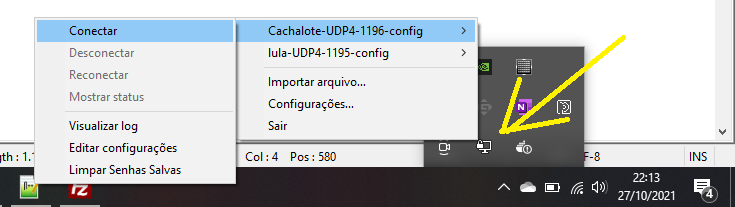

Formando profissionais para atuar na pesquisa, desenvolvimento e inovação em Computação Aplicada.
Status atual dos computadores da sala 902T.

O NixOS é uma distribuição Linux baseada no
gerenciador de pacotes Nix. Sua principal característica
é a configuração declarativa: em vez de instalar
programas e configurar o sistema manualmente, descrevemos como ele
deve ser configurado e o NixOS constrói o sistema a partir dessa
descrição.
No laboratório, essa configuração é dividida em dois níveis:
configuration.nix —
configura o sistema operacional e é administrado pelo responsável
do laboratório.
flake.nix —
define o ambiente de desenvolvimento de cada projeto e pode ser
utilizado pelo próprio usuário.
sudo.
Portanto, alterações na configuração global devem ser solicitadas
ao responsável do laboratório.
configuration.nixA configuração global do NixOS está no arquivo:
/etc/nixos/configuration.nixEle define características que afetam todo o computador, como programas instalados globalmente, serviços, drivers e configurações de hardware e rede.
Por exemplo, programas disponíveis para todos os usuários podem ser definidos assim:
environment.systemPackages = with pkgs; [
git
firefox
vscode
];Depois de uma alteração, o sistema é reconstruído pelo administrador:
sudo nixos-rebuild switchUm Flake permite declarar as ferramentas e dependências necessárias para um projeto sem modificar a configuração global do computador.
Isso permite criar ambientes:
sudo.
Dentro da pasta do projeto, crie um arquivo chamado:
flake.nixUm exemplo de ambiente para desenvolvimento Python:
{
description = "Ambiente de desenvolvimento Python";
inputs.nixpkgs.url =
"github:NixOS/nixpkgs/nixos-26.05";
outputs = { nixpkgs, ... }:
let
system = "x86_64-linux";
pkgs = nixpkgs.legacyPackages.${system};
in
{
devShells.${system}.default = pkgs.mkShell {
packages = with pkgs; [
python312
git
];
};
};
}
Os programas declarados em packages estarão disponíveis
dentro do ambiente do projeto.
Para entrar no ambiente:
nix developA partir desse momento, você pode utilizar as ferramentas definidas no Flake.
python --version
git --versionPara sair do ambiente:
exitnix develop não altera o
configuration.nix e não requer privilégios administrativos.
flake.lock
As dependências do projeto podem ser adicionadas diretamente ao
flake.nix.
Por exemplo, um projeto pode utilizar:
packages = with pkgs; [
python312
git
gcc
gnumake
];Ao utilizar um Flake, o Nix também mantém o arquivo:
flake.lock
Enquanto o flake.nix descreve o que o projeto
precisa, o flake.lock registra
quais revisões das dependências devem ser utilizadas.
Assim, outro computador pode obter o mesmo ambiente executando:
nix developPara atualizar as dependências:
nix flake updateflake.lock sem necessidade em projetos
que já estejam funcionando, pois uma atualização pode modificar as
versões das dependências.
Os arquivos do ambiente devem ser versionados junto com o projeto:
flake.nix
flake.lockPor exemplo:
git add flake.nix flake.lock
git commit -m "Adiciona ambiente Nix"
git pushOutro usuário pode então clonar o projeto e executar:
git clone <repositorio>
cd <projeto>
nix developDessa forma, o ambiente de desenvolvimento pode ser reproduzido em diferentes computadores do laboratório.
Sempre que precisar de uma ferramenta específica para seu projeto,
tente primeiro adicioná-la ao seu flake.nix.
Se a ferramenta precisar ser instalada globalmente ou depender de alguma configuração do sistema, solicite ao responsável do laboratório.